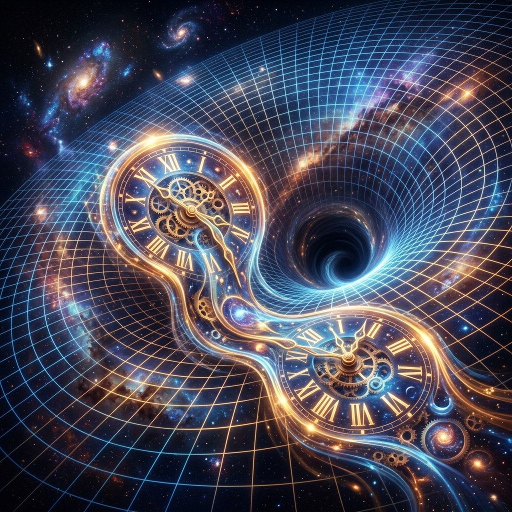

Clock Hypothesis and Observer in General Relativity

In the study of relativistic dynamics, understanding how accelerating observers perceive time relative to stationary inertial frames is crucial. This document explores the foundational clock hypothesis and details the mathematical framework describing observers on general trajectories within Minkowski space and curved spacetime manifolds.
1. Accelerating Observer and the Clock Hypothesis
Consider an observer S accelerating with a proper acceleration g with respect to an inertial observer O. For simplicity, we assume there is no influence of gravity at any point in spacetime.
First, we define proper acceleration: it is the acceleration felt directly by the observer S. Mathematically, an instantaneously co-moving inertial frame to S will measure a constant acceleration g.
Secondly, we address how fast S's clock ticks within the coordinate frame of the inertial observer O. As measured by O, at any coordinate time t, the observer S has an instantaneous velocity v(t) and acceleration g. The clock hypothesis asserts that the rate at which a clock ticks in the accelerated frame S, as measured by the inertial observer O, depends only on its instantaneous velocity v and is independent of its acceleration.
Consequently, the rate of S's clock ticking as measured by O is inversely proportional to the Lorentz factor:
If \(d\tau\) is the infinitesimal proper time elapsed on S's clock while a coordinate time interval \(dt\) has evolved in O's frame, the clock hypothesis ensures that:
Notice that there is explicitely no g dependence in this relationship. Integrating this expression yields the total proper time elapsed:
This integral is identically the spacetime interval evaluated between the starting and final events in Minkowski space. In a nutshell, by constructing an instantaneous inertial frame and applying the clock hypothesis, we recover the elapsed proper time for any accelerated trajectory.
2. Freely-Falling Particle in a Gravitational Field
Transitioning into curved spacetime environments, we consider a particle in free fall under the influence of a gravitational field.
Claim 1.
In a locally freely-falling frame, the metric tensor reduces to the flat Minkowski metric \(\eta_{\mu\nu}\).
Proof. Using Gaussian-normal coordinates, we can construct a local coordinate system along the geodesic. Let \(dt\) be the coordinate time elapsed in the locally freely-falling frame. Because the frame is instantaneously at rest relative to itself locally, the spatial increments vanish (\(dx^i = 0\)). The spacetime interval becomes:
where \(d\tau\) represents the invariant spacetime interval between the initial and final spacetime points. Thus, for a freely-falling particle, the proper time elapsed is exactly equal to the spacetime interval computed along its geodesic trajectory. ■
3. Particle Following a General Trajectory in Spacetime
Now, let us extend this formulation to a particle following an arbitrary, potentially non-geodesic trajectory in a general curved spacetime, parameterized by \(x^\mu(\lambda)\).
Consider a freely-falling co-moving frame (or a co-moving geodesic) at a specific point \(x^\mu(\lambda_0)\) along the trajectory, which we denote as frame Q. The mathematical existence and uniqueness theorem for geodesic differential equations guarantees that there always exists a unique geodesic satisfying any prescribed initial conditions of position and four-velocity.
In this local frame Q, the particle is instantaneously stationary (\(v = 0\)). By the Einstein Equivalence Principle, this configuration is locally physically equivalent to the accelerating lift and co-moving inertial frame setup analyzed in Section 1. Therefore, invoking the clock hypothesis, the rate of clock ticking in the particle's own frame matches that of the locally flat inertial frame Q.
The infinitesimal time elapsed in Q's frame satisfies:
where \(ds\) is the invariant spacetime interval. Consequently, the clock carried by any physical particle measures the accumulated spacetime interval along the path traced by that particle through spacetime. The general mathematical statement equivalent to the clock hypothesis is written as:
This elegant result bridges local flat-space kinematics with general coordinate invariance in arbitrary geometric backgrounds.